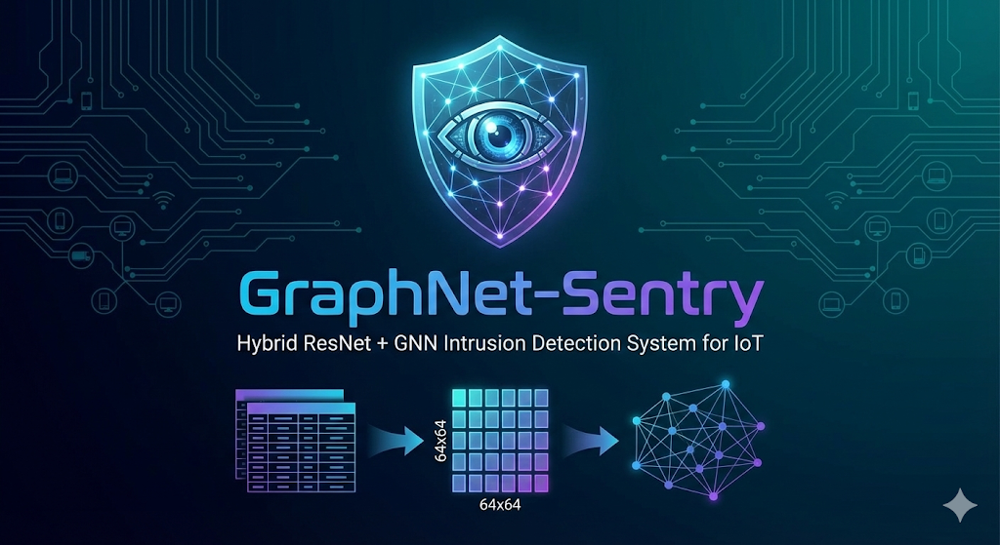
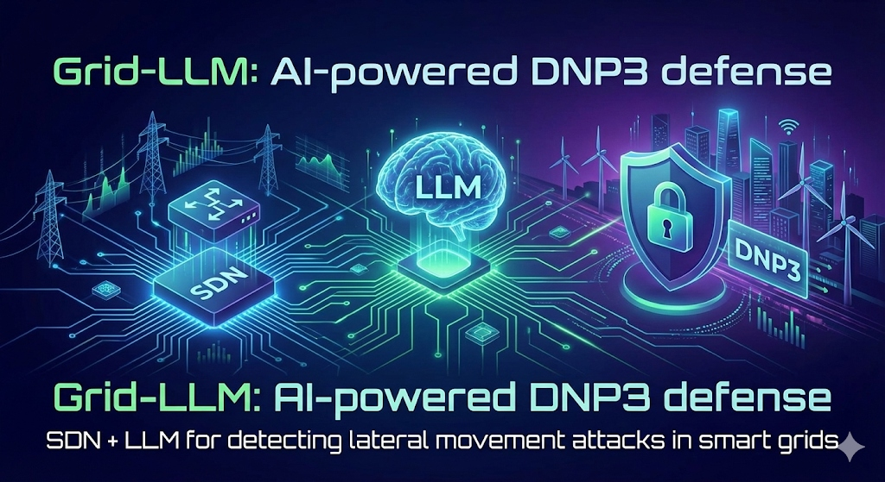
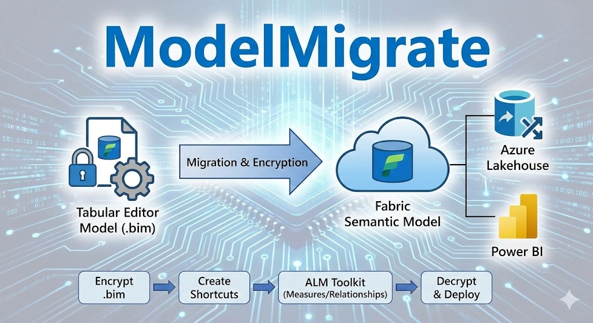

Hello, I'm
Sai Srikar Reddy Kolli
|
Bridging Complex System Architecture with Advanced AI Solutions. Building scalable applications and pushing the boundaries of Computer Vision & Deep Learning.
Bridging Complex System Architecture with Advanced AI Solutions. Building scalable applications and pushing the boundaries of Computer Vision & Deep Learning.

I'm currently pursuing my Master's in Computer Science at the University of Missouri Columbia, where I also serve as a Graduate Research Assistant at CAFNR, developing Computer Vision-based livestock monitoring systems using OAK and RealSense depth cameras.
With professional experience as a Software Engineer at MAQ Software, I've built enterprise-grade tools including ModelMigrate — an automated pipeline for migrating Tabular Editor models to Microsoft Fabric. My expertise spans Deep Learning, Distributed Systems, Computer Vision, and Full-Stack Development with the MERN stack.
I'm passionate about solving hard problems — from designing hybrid GNN + CNN architectures for cybersecurity to building flash-sale booking systems that handle thousands of concurrent users. I bring both research depth and engineering rigor to every project.
Projects Built
GitHub Repos
Technologies
Developing Computer Vision-based automated pig monitoring systems using OAK and RealSense depth cameras. Building 3D point cloud pipelines, posture classification models, and body condition scoring algorithms for livestock health assessment.
Advanced coursework in Distributed Systems, Data Visualization, AI/ML, and Quantum Computing. Research focus on Computer Vision applications and deep learning architectures.
Built enterprise Power BI solutions and developed ModelMigrate — an automated tool for migrating Tabular Editor models to Microsoft Fabric Semantic Models. Implemented cloud-based data pipelines with Azure Lakehouse and authored encryption/decryption scripts for .bim file processing.
Gained hands-on experience in the full software development lifecycle. Built full-stack web applications, collaborated with cross-functional teams, and contributed to client-facing projects using Node.js and React.
Specialized in Software Engineering, Data Structures & Algorithms, Machine Learning, and Web Development. Active participant in coding competitions, hackathons, and open-source contributions.

Hybrid ResNet-50 + GNN intrusion detection system for IoT ecosystems. Transforms network traffic into multi-channel images for near-perfect attack detection on CICIOT-2023, UNSW-NB15, and TON-IoT datasets.

Flash-sale ready booking system handling thousands of concurrent users. Solves double-booking with optimistic locking, Redis distributed locks, and Kafka-based virtual waiting rooms.

AI-powered DNP3 defense system using SDN + LLM for detecting lateral movement attacks in smart grid infrastructure. Secures critical power systems with intelligent threat analysis.

Enterprise migration tool for converting Tabular Editor models to Microsoft Fabric Semantic Models. Features automated .bim file encryption/decryption, relationship fixing, and Azure Lakehouse integration.

Collection of browser-based 3D Mars colony building and space exploration games. Features colony builders, space shooters, and city simulators — all running in the browser with no installation.

Enhanced Super-Resolution Generative Adversarial Network for high-quality image upscaling. Implements perceptual-driven SR with network interpolation for photorealistic results.

Video upscaling pipeline that converts standard definition video to high definition using deep learning-based super resolution techniques.

Data visualization platform for USGS GeoJSON earthquake data. Reveals spatial patterns, temporal trends, event severity distributions, and co-occurrence analysis with interactive maps.

Data visualization final project analyzing NYC Citi Bike system usage patterns, station demographics, and ridership trends through interactive charts and geospatial maps.

Stock price prediction using regression analysis with multiple kernel functions (RBF, polynomial, linear). Built with NumPy, Scikit-learn, and Matplotlib for predictive modeling.

Interactive dashboard for tracking stock market investments with real-time data visualization, portfolio analytics, and performance tracking charts.

Full-featured admin dashboard with portfolio management, news feed integration, and real-time transaction tracking built with React and Express.

Text analytics pipeline that extracts articles from URLs and computes NLP metrics — sentiment scores, readability indices (FOG), complexity analysis, and linguistic feature extraction.

Full-stack note-taking application with a React frontend and Node.js/Express backend. Features CRUD operations, user authentication, and a clean modern interface.

Online food ordering platform with cart management, menu browsing, and a responsive user interface for a seamless ordering experience.

Java-based store management system with modules for mobile phone inventory (CRUD) and customer administration. Features search, update, and delete operations.
© 2025 Sai Srikar Reddy Kolli. All Rights Reserved.